A field inspection app built for glare, rain, and gloves
I turned an 80-page technical manual into a step-by-step, high-contrast mobile app. Inspectors no longer carry binders or paper forms, and the app checks required fields as they go, so nothing gets skipped before they leave the highway.
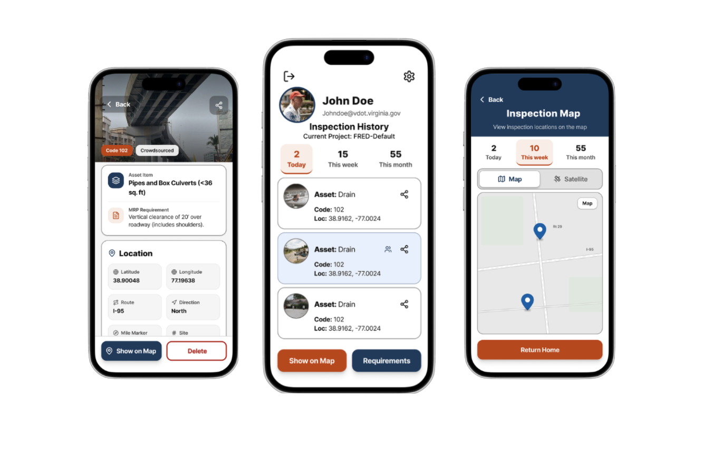
- Role
- Lead UX Designer
- Client
- Virginia DOT
- Timeframe
- 8+ months
- Team
- PM, Solutions Architect, Software Engineer, Engineering Intern
- Status
- In testing
Safety-critical work, done on paper
Field inspectors rate road assets on highway shoulders, in glare, rain and traffic. They had to follow an 80-page manual and strict audit rules using paper forms, which slowed them down and made it easy to miss a step.
As Lead UX Designer, I owned the move from that manual process to a mobile product, designing in two-week sprints alongside engineering.
Every choice answers a field condition
High-contrast UI
Screens wash out in sun and rain, so every view is built for maximum legibility under glare.
Visual perceptionCriteria on screen
Inspectors had to remember 80+ pages of passing rules. The rating screen now shows the exact criteria.
Recognition over recallOversized targets
Small buttons cause miss-taps in heavy gloves. Every primary action is a large, full-width target.
Fitts's LawStop & check
In a rush it's easy to skip one asset among hundreds. The app flags missing required inputs before an inspector can move on.
Forcing function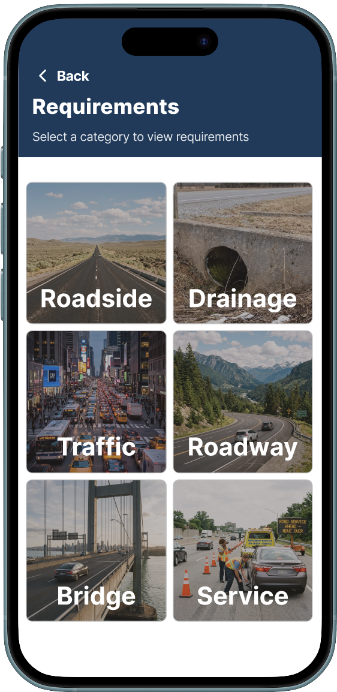
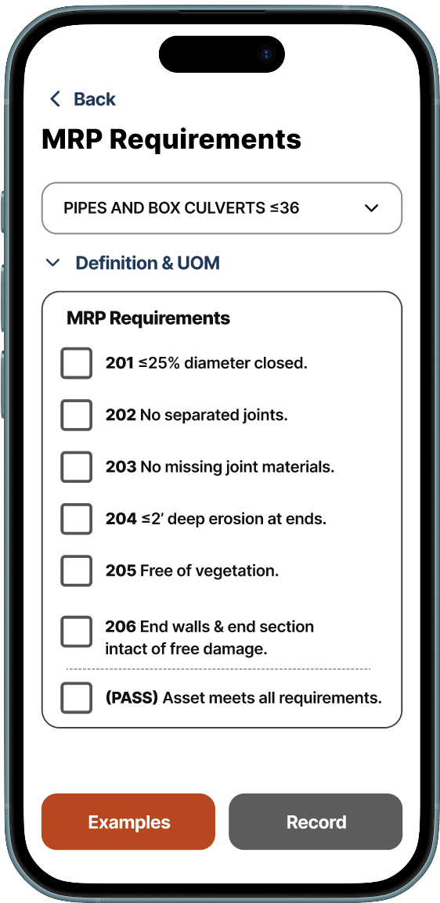
What the usability study showed
I ran an unmoderated Maze study with 8 participants recruited via Prolific. On their own phones, they found an asset on the map, rated it against IMCS-626 criteria, and finished the documentation. With 8 people, I treated the results as direction, not proof.
What worked
Rating, the most safety-critical flow, had the highest success. Participants rated the on-screen criteria 4.9 / 7 for confidence and the Record button 5.2 / 7 for being easy to tap.
What needed work
Finding an asset on the map was the hardest step, with about half of all taps landing as misclicks. Documentation came next.
"Too many buttons to get to the requirements section"
"Bundle records and upload them together"
Designing V2 from the data
The study pointed at two flows. I started where success was lowest.
Finding an asset: 38% success
V1 used small, unlabeled pins that were easy to miss with a thumb. V2 adds search by route, mile marker or asset, labeled pins with 44px targets, a Near me shortcut, and a List view for anyone who'd rather not use the map. Tapping a pin opens a card with distance and a clear next step.
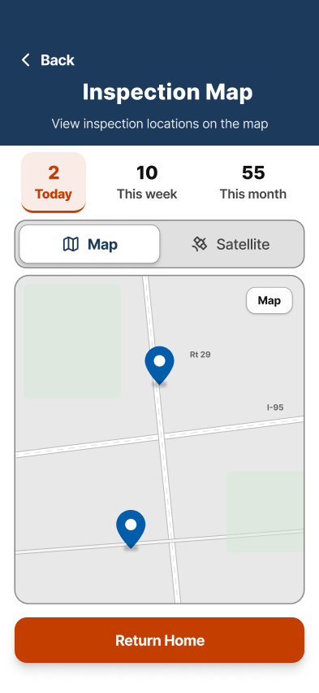
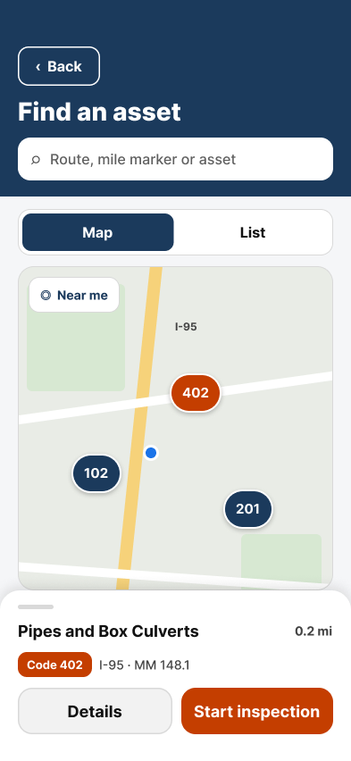
Documentation: 50% success
Participants asked to bundle records instead of sending them one by one. V2 collects the day's records on one screen to upload together. A record missing a required photo is flagged and held back, so batch upload never skips a required step.
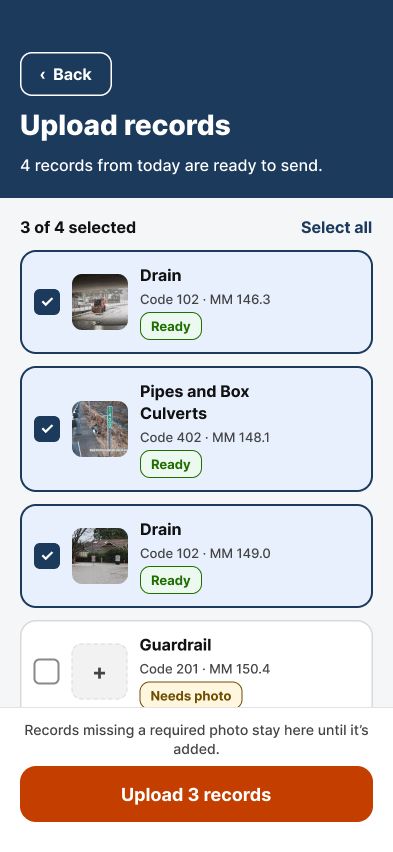
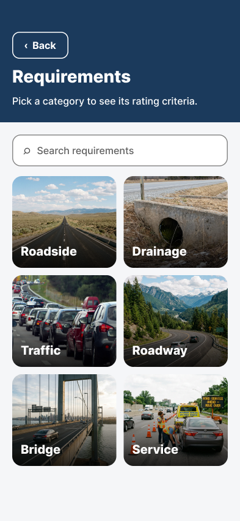
Also in V2
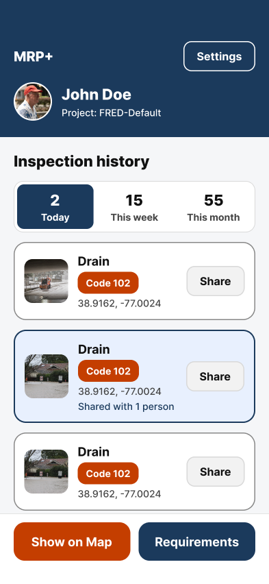
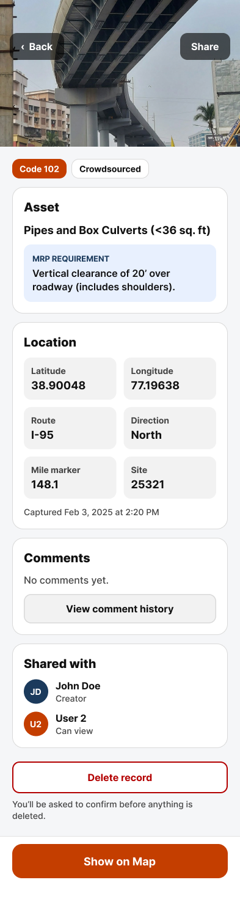
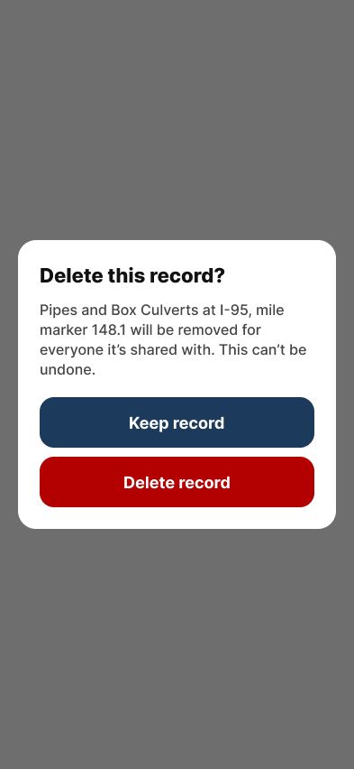
One system, two products
The field app and the management dashboard share one design system, so a status, a color or a button means the same thing on a phone as on a desktop. Tokens are sized per context: 56px controls for gloved hands in the field, 35px for dense desk work.
Color
Navy and orange carry the brand. Every text pairing passes WCAG 2.1 AA (4.5:1), most pass 7:1, for reading in direct sun.
Headers, secondary actions, selection
White text 11.6:1
The one main action per screen
White text 5.2:1
Destructive actions, as an outline
On white 7.2:1
Body and secondary text
18.9:1 · 9.7:1
Selected cards, paired with a navy border
Text 16.5:1
Core components
Buttons. Orange marks the one main action on a screen, navy supports it, and destructive actions are outlined in red. Keyboard focus shows a 3px blue ring.
Code: 102
Code: 102
Record card. Selection changes both fill and border, so it still reads in glare.
Paired decisions. In the dashboard, Approve and Deny share one neutral style so neither looks like the default.
Where it stands
In testing, and in demand
Inspectors testing the app want to use it on more VDOT projects. It's organized by project (like FRED and NOVA I-66), so new ones fit right in.
Paper to mobile
An 80-page manual became a guided workflow that surfaces criteria on screen and checks required fields as inspectors go.
Validated, with a clear V2
The study confirmed the core decisions held up and pointed to exactly what to improve next.
Part of a connected system. See the Operations Hub case study for the other half.
The Alpha Team
Sole UX Designer on a 5-person team at Leidos: PM, Solutions Architect, Software Engineer, and Engineering Intern.
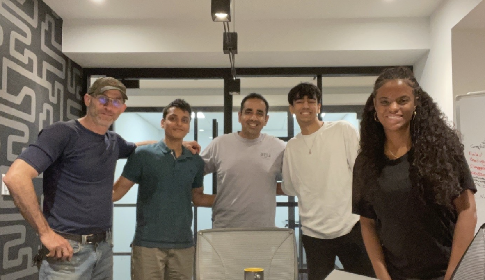